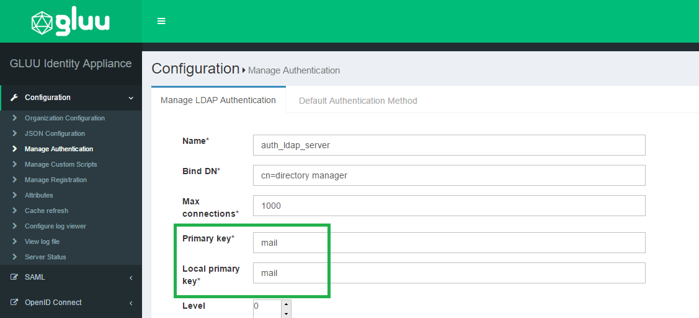
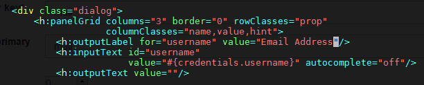

FAQ#
General FAQ#
Logs#
When it comes to troubleshooting issues in the Gluu Server--from service hiccups to outages--your server logs are the best place to gather relevant information.
How to change the hostname/IP address/listening port of Gluu Server#
It is not recommended to change the hostname or IP address or the listening port of any installed Gluu Server instance. The hostname and the IP address is used in many settings stored in LDAP configuration entries, Apache/Jetty configuration and into the custom authentication script. It is strongly recommended to use a fresh install in a new VM.
Note
Please use static IP address with reverse proxy or load balancer or simple port forwarding.
How to set the port to something other than 443#
Ports other than 443 are not supported as the port is used by Apache Web Server. In theory, the change must reflect in the SAML and OpenID Connect metadata and still there might be errors.
Note
Please use a virtual ethernet interface and a different IP address on your server
How to customize IDP to ask for Email instead of username#
In oxTrust navigate to the Manage Authentication tab within the Configuration section. By default the Primary Key and Local Key are set to uid. Set those va lues to mail and now your Gluu Server will expect email as the identifier instead of username.

Now you will want to update your IDP login page to display Email Address as the requested identifier. In order to do that you need to modify the login.xhtm l file, which is located in /opt/tomcat/webapps/oxauth/. Insert Email Address as the value for outputLabel; this snippet is under the dialog class. S ee the screenshot below.

How to add additional roles to oxTrust and change permissions for existing ones#
The additional role requires the implementation of dynamic rules in Jboss SEAM and then uitlize them in oxTrust as the available manager and user roles are defined within the securit.drl hard-coded into oxTrust. The file checks for the maanger group membership and adds the role to the web context. This is currently out of the scope of support.
Warning
oxTrust is a tool for administrators and it must nto be used as a user facing application.
Troubleshooting Guide#
Add admin for Gluu server#
Please follow these steps to restore your Gluu admin account (you will probably need to substitute actual port, bind names and hostnames with ones used by your installation):
1) Login into Gluu's chroot environment with the command below:
# service gluu-server login
2) Run this command:
#/opt/opendj/bin/ldapsearch -p 1636 -Z -X -D 'cn=directory manager' -w 'YOUR_BIND_PASSWORD' -b o=gluu gluuGroupType=gluuManagerGroup 1.1
and remember the displayed dn of the Gluu Manager Group for future use.
3) Run this command:
# /opt/opendj/bin/ldapsearch -p 1636 -Z -X -D 'cn=directory manager' -w 'YOUR_BIND_PASSWORD' -b o=gluu ou=people 1.1
and remember the displayed dn of the People ou for future use.
4) While staying in the chrooted environment, create the file
~/add_user.ldif using your favorite text editor, and copy the
following lines to it:
dn: inum=tempadmin,ou=people,o=@!F9CC.D762.4778.1032!0001!2C72.BB87,o=gluu
changetype: add
uid: tempadmin
objectClass: gluuPerson
objectClass: top
givenName: tempadmin
sn: tempadmin
inum: tempadmin
gluuStatus: active
userPassword: 1q2w3e
Please note the string's segment marked with bold: you will have to substitute it with dn of your own People ou which you've acquired in step 3).
5) Run this command:
# /opt/opendj/bin/ldapmodify -p 1636 -Z -X -D 'cn=directory manager' -w 'YOUR_BIND_PASSWORD' -f ~/add_user.ldif
This will create new user tempadmin with attributes provided via file created in step 4).
6) Now create file add_2_group.ldif in your home ("~/") directory and
copy the following lines to it:
dn: inum=@!F9CC.D762.4778.1032!0001!2C72.BB87!0003!60B7,ou=groups,o=@!f9cc.d762.4778.1032!0001!2c72.bb87,o=gluu
changetype: modify
add: member
member: inum=tempadmin,ou=people,o=@!f9cc.d762.4778.1032!0001!2c72.bb87,o=gluu
Again, please note the strings' segment marked with bold: you will have to substitute contents of the "dn:" string with dn of your own Gluu Manager Group which you've acquired in step 2), and for "member:" string you will have to use the dn of tempadmin user (the one you already specified in the 1st line of the file in step 4).
7) Run this command:
# /opt/opendj/bin/ldapmodify -p 1636 -Z -X -D 'cn=directory manager' -w 'YOUR_BIND_PASSWORD' -f ~/add_2_group.ldif
This will add tempadmin user to the IdP managers group and you can then login and assign another user to act as admin.
Connectivity Issues?#
DNS names not resolving!#
It is possible that even after configuring everything there is a DNS resolve error in Gluu Server.
The reason is the DNS used inside the chroot container; the dns used by the container is the Google DNS servers
and the DNS for the host OS is not used. Therefore to fix this issue:
- Change the DNS inside the container by editing the
/etc/resolv.conffile and adding the DNS used by your organization
Forgot the admin password!#
Gluu Server stores the admin password in the file /install/community-edition-setup/setup.properties.last under the
property ldapPass. Retrieve the data using the following command:
# grep ldapPass= /install/community-edition-setup/*.last
Warning
It is strongly recommended to remove the file from any production environment or encrypt the file
Revert Authentication Method#
It is not unlikely that you will lock yourself out of Gluu Server while testing the authentication script, if there is any problem in it. In such a case the following method can be used to revert back the older authentication method.
- Run the following command to collect the
inumfor the Gluu Server installation.
/opt/opendj/bin/ldapsearch -h localhost -p 1389 -D "cn=directory
manager" -j ~/.pw -b "ou=appliances,o=gluu" -s one "objectclass=*"
oxAuthenticationMode
- Create a
LDIFfile with the contents below:
dn: inum=@!1E3B.F133.14FA.5062!0002!4B66.CF9C,ou=appliances,o=gluu
changetype: modify
replace: oxAuthenticationMode
oxAuthenticationMode: internal
As an example, we shall call this file changeAuth.ldif.
Note: Replace the inum from the example above with the inum of the Gluu Server from the ldapsearch command.
- Replace the the authentication mode using
ldapmodifycommand.
`/opt/opendj/bin/ldapmodify -p 1636 -Z -X -D 'cn=directory manager' -w 'YOUR_BIND_PASSWORD' -f ~/changeAuth.ldif
No admin access after Cache Refresh?#
Add the password for your admin account to ~/.pw and then use the commands below to add yourself as an admin.
# set this to your actual user name
export newgluuadmin='myusername'
# this is the file that will hold the info to be imported
export ldiffile='addManagers.ldif'
# run this and verify that the output is for your account
/opt/opendj/bin/ldapsearch -h localhost -p 1636 -D "cn=directory manager" -j ~/.pw -Z -X -b "o=gluu" "uid=$newgluuadmin" uid givenName sn cn
dn: inum=@!134D.3C3D.796E.FECE!0001!E022.CC3C!0000!A8F2.DE1E.D7FB,ou=people,o=@!134D.
3C3D.796E.FECE!0001!E022.CC3C,o=gluu
uid: myusername
givenName: John
sn: Doe
cn: John Doe
Now you can run these commands to make the file above:
head -n1 /opt/opendj/ldif/groups.ldif > $ldiffile
echo 'changetype: modify' >> $ldiffile
echo 'add: member' >> $ldiffile
echo "member: $(/opt/opendj/bin/ldapsearch -h localhost -p 1636 -D "cn=directory manager" -j ~/.pw -Z -X -b "o=gluu" "uid=$newgluuadmin" uid givenName sn cn |grep -A1 dn |cut -d ' ' -f 2- | sed 'N;s/\n//')" >> $ldiffile
The resulting ldif will look like this:
dn: inum=@!134D.3C3D.796E.FECE!0001!E022.CC3C!0003!60B7,ou=groups,o=@!134D.3C3D.796E.FECE!0001!E022.CC3C,o=gluu
changetype: modify
add: member
member: inum=@!134D.3C3D.796E.FECE!0001!E022.CC3C!0000!A8F2.DE1E.D7FB,ou=people,o=@!134D.3C3D.796E.FECE!0001!E022.CC3C,o=gluu
Once the ldif looks right, run this to grant your account admin rights in Gluu:
/opt/opendj/bin/ldapmodify -h localhost -p 1636 -D "cn=directory manager" -j ~/.pw -Z -X -f addManagers.ldif
Log into the web interface and pick up where you left off :)